この文書はOracle Content Management(OCM)のサイト作成機能を利用し、Web サイトを作成・公開する方法をステップ・バイ・ステップで紹介するチュートリアル【初級編】です。また、サイト上で公開するコンテンツは、アセット管理機能で管理されるコンテンツ・アイテムを利用します
【お知らせ】
この文書は、2023年8月時点での最新バージョン(23.7.2)を元に作成されてます。
チュートリアル内の画面ショットについてはOracle Content Managementの現在のコンソール画面と異なっている場合があります。
前提条件
- OCMインスタンスが作成済であること(以下の作成手順参照)
- 少なくとも下記4つのOCMインスタンスのアプリケーション・ロールが付与された管理ユーザーを用意すること
- CECContentAdministrator
- CECDeveloperUser
- CECEnterpriseUser
- CECRepositoryAdminisrrator
[Memo]
ユーザーの作成とアプリケーションロールの付与手順は、OCI IAM Identity Domain環境でOracle Content Managementインスタンスの利用ユーザーを作成するもしくはOracle Content Managementインスタンスの利用ユーザーを作成するをご確認ください。 - Oracle Content ManagementをHeadless CMSとして使ってみよう【初級編】が完了していること
0. 説明
このチュートリアルでは、OCMのサイト機能を利用してWebサイトを作成・公開します。また、Webサイト上で公開するコンテンツは、以前のチュートリアルで作成したリポジトリ(Sample Content Repository)とコンテンツ・タイプ(sampleNewsType)を利用します。
作成するWebサイトは以下の通りです
- サイト名: firstSite
- 対応言語: 日本語(ja)
-
サイトデザイン：OCMの事前定義済テンプレート(StarterTemplate)を利用

1. サイト作成の準備
1.1 ローカリゼーションポリシーの作成
このチュートリアルでは、日本語のWebサイトを作成します。そのため、Webサイト上で公開するコンテンツ・アイテムの言語も日本語が必要です。このように、コンテンツ・アイテムを公開する際に「どの言語が必要なのか？」を定義するのがローカライゼーションポリシーです。
ここでは、日本語(ja)が必須、というポリシーを作成します
-
OCMインスタンスにアクセスし、左ナビゲーションのADMINISTRATION の 「コンテンツ」 をクリックします
-
「コンテンツ」の右隣のメニューから 「ローカライゼーション・ポリシー」 を選択し、「作成」 をクリックします

-
以下の通りに入力し、「保存」 をクリックします
- プロパティ
- 名前: firstSite Localization Policy
- 説明: （任意）
- 言語
- 必須: 日本語(ja)
- デフォルト: 日本語(ja)
-
オプション: （未選択）

- プロパティ
-
firstSite Localization Policyが作成されます
1.2 コンテンツ・レイアウトの作成
コンテンツ・レイアウトとは 作成されたコンテンツ・アイテムの表示形式 を定めたものです。具体的には、Webサイトのページにコンテンツ・アイテムを配置した時のレイアウト(=HTML)を定義したものになります。
ここでは、コンテンツ・タイプ=sampleNewsTypeから作成されたコンテンツ・アイテムを表示する2つのコンテンツ・レイアウトを作成します。なお、作成される2つのコンテンツ・レイアウトは同じレイアウトになります
- sampleNewsType-overview: コンテンツ・アイテムを一覧表示（インデックス表示）するレイアウト
- sampleNewsType-detail: コンテンツ・アイテムを詳細表示（コンテンツそのものを表示）するレイアウト
-
左ナビゲーションの 「開発者」 をクリックします。続けて、コンポーネントの 「すべてのコンポーネントの表示」 をクリックします

[Memo]
「開発者」メニューを利用するには、ユーザーに CECDeveloperUser ロールの付与が必要です -
右上の 「作成」→「コンテンツ・レイアウトの作成」 をクリックします

- コンテンツ・レイアウトを作成します。ここでは以下の通りに入力し、「作成」をクリックしま
- アセット・タイプの選択: sampleNewsType
- 表示するフィールドの選択: 概要
- サイトで使用する時にカスタム設定のサポートを追加します: チェックしない
- コンテンツ・レイアウトの名前の指定: sampleNewsType-overview (※自動生成されます。変更しません)
-
コンテンツ・レイアウトの説明の指定: （任意）
[Memo]
コンテンツ・レイアウトの名前には、英数字、ハイフン”-“、アンダースコア”_“のみ入力できます
-
同じ手順を繰り返し、sampleNewsType-detail を作成します。この時、「表示するフィールドの選択」は 「詳細」 を選択します
-
以上で、コンテンツ・レイアウトの作成は完了です
1.3 コンテンツ・レイアウトとコンテンツ・タイプを関連付け
前の手順で作成したコンテンツ・レイアウトを、sampleNewsTypeから作成されたコンテンツ・アイテムをWebサイトで表示する際に利用できるようにします
-
左ナビゲーションのADMINISTRATIONの 「コンテンツ」→「アセット・タイプ」 を選択します
-
sampleNewsType をクリックします（もしくは、sampleNewsTypeを選択し、「編集」 をクリック）

-
「コンテンツ・レイアウト」タブをクリックします

-
デスクトップ・コンテンツ・レイアウトを下記の通りに設定し、「保存」 をクリックします
- コンテンツ・アイテムのデフォルト: sampleNewsType-detail
- コンテンツ・リストのデフォルト: sampleNewsType-overview
- コンテンツ・リストのデフォルト: sampleNewsType-overview
-
コンテンツ・プレースホルダーのデフォルト: sampleNewsType-detail
2. サイトの作成
リポジトリSample Content Repositoryのアセットを利用するWebサイトを作成します。Webサイトは エンタープライズ・サイト を作成します。エンタープライズ・サイトは、以下の操作が可能となります
- リポジトリ及びリポジトリ内のコンテンツ・アイテムやデジタル・アセット、ローカリゼーション・ポリシーなどをWebサイトで利用できる
-
Webサイトを作成すると、このWebサイト向けの「公開チャネル」も同じ名前で自動的に作成されます
[Memo]
エンタープライズ・サイトを作成するには、ユーザーに CECEnterpriseUser ロールの付与が必要です。
サイトガバナンスが有効化されている場合、管理者がテンプレートを公開しないなぎり、サイトメニューからエンタープライズサイトを作成できません。
代替え手段として、開発者→テンプレートより、テンプレートを選択し「サイトの作成」を実行することができます[TIPS]
StarterTemplate が表示されない場合、OCMインスタンスの管理者に連絡し、テンプレートへのアクセス権設定をお願いしてください。なお、テンプレートのアクセス権は、「開発者」→「テンプレート」→「StarterTemplate」→「メンバー」 より設定します
2.1 サイトの作成
-
左ナビゲーションの 「サイト」 をクリックします
-
右上の 「作成」 をクリックします

-
テンプレートを選択します。ここでは StarterTemplate を選択します

- 「サイトの構成」を以下の通りに入力し、「次」 をクリックします
- タイプ: エンタープライズ
- アセット・リポジトリ: Sample Content Repository
- ローカリゼーション・ポリシー: firstSite Localization Policy
-
デフォルト言語: 日本語(ja) （※自動設定されます。変更不可）

- 「詳細の追加」を以下の通りに入力し、「終了」 をクリックします
- 名前: firstSite
- 簡易URL値の接頭辞: firstSite（※自動設定されます。変更しない）
-
説明: （任意）

-
firstSiteが正常に作成されることを確認します

2.2 作成された公開チャネルの確認
エンタープライズサイトを作成すると、同じ名前の公開チャネルが自動的に作成されます。ここでは、作成された公開チャネルを確認します
-
左ナビゲーションのADMINISTRATION の 「コンテンツ」→「チャネルのパブリッシュ」 をクリックします
-
サイト名と同じ firstSite をクリックします
-
「公開チャネル」が下記の通りに設定済であることを確認します。サイト作成時に指定したローカライゼーション・ポリシーが設定されていることを確認し、右上の 「取消」 をクリックします
- 公開中: すべてを公開できます
- ローカリゼーション: firstSite Localization Policy
- ランキング・ポリシー: グローバル・デフォルト
-
公開されたリソースへのアクセス: パブリック
3. サイト上で利用するアセットの作成と公開
前の手順で作成したfirstSiteサイトで公開するアセットを作成します。ここでは、Oracle Content ManagementをHeadless CMSとして使ってみよう【初級編】 で登録したコンテンツ・アイテムをそのまま利用します。
具体的には、既存のコンテンツ・アイテムと画像ファイルを、前の手順で作成したサイトの公開チャネルfirstSiteを追加します
-
左ナビゲーションの 「アセット」 を開き、Sample Content Repositoryリポジトリが選択されていることを確認します
-
sample news content 001 とメイン画像に選択した画像アセット（ここでは SampleImage1.jpg）の2つを選択し、「チャネル」 をクリックします
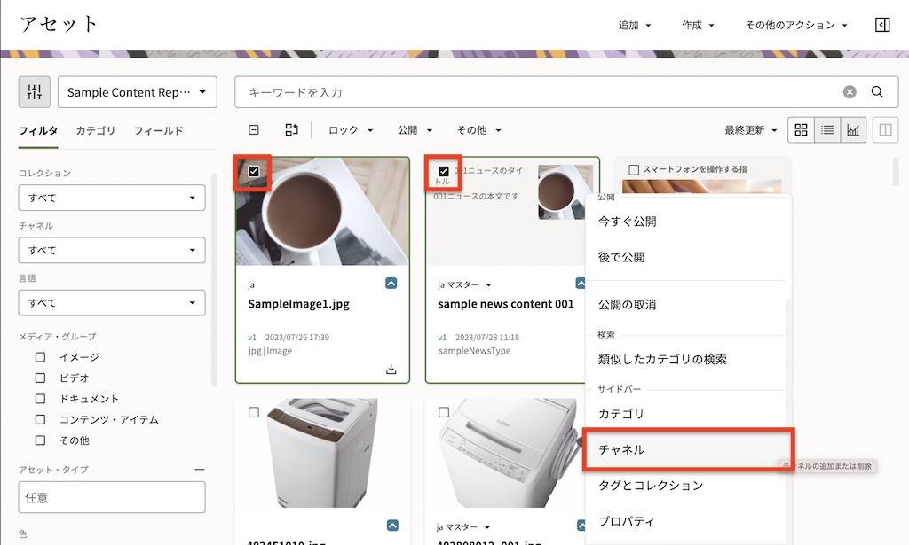
-
右サイドパネルに「チャネル」が表示されます。「追加」 をクリックします
-
「firstSite」 を選択し、「追加」 クリックします

-
コンテンツ・アイテム
sample news content 001とメイン画像に選択した画像アセット（SampleImage1.jpg）のチャネルにfirstSiteが追加されます。左メニューの「フィルタ」タブの「チャネル」でfirstSiteを選択すると、2つのアセットが追加されていることを確認できます -
続けて、
sample news content 001とメイン画像に選択した画像アセット（SampleImage1.jpg）の2つのアセットを、firstSiteチャネルに公開します。sample news content 001とメイン画像に設定した画像アセット（SampleImage1.jpg）の2つを選択し、「今すぐ公開」をクリックします -
確認画面が表示されます。チャネルで選択済を選択し、続けて公開チャネルで firstSiteを選択します。最後に右上の公開をクリックします
-
アセットが公開されます。
sample news content 001の 「チャネル」を開きますfirstSiteチャネルに公開されたことを確認します
-
sample news content 001のメイン画像に選択した画像アセット（SampleImage1.jpg）の 「チャネル」を開きます。firstSiteチャネルに公開されたことを確認します
4. サイトの編集・公開
2項で作成したfirstSiteを編集し、公開します。サイトの編集はWebブラウザベースの編集画面(通称:Site Builder)を利用します。Site Builderはドラッグ&ドロップなど直感的な操作で、Webサイト内のページを編集できます
4.1 サイトの編集
4.1.1 編集モードへの切り替え
-
左ナビゲーションの 「サイト」 をクリックします
-
firstSite を選択し、開くアイコンをクリックします。もしくは、firstSiteを選択し、右クリック→「開く」を選択します
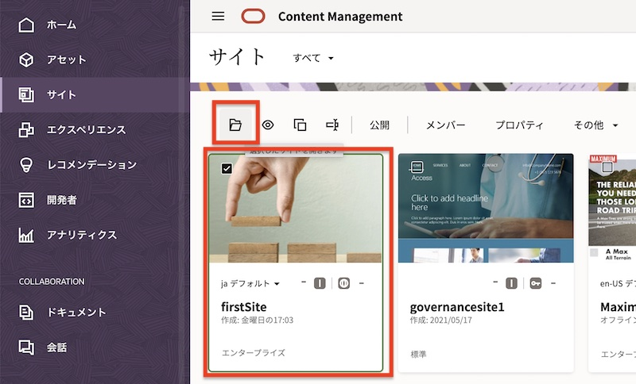
-
サイトの編集画面(Site Builder)が開きます。「ベース・サイト▼」 をクリックし、「新規更新の作成」 を選択します
-
「新規更新の名前の指定」に 「update」 と入力し、「OK」 をクリックします
-
「update」に切り替わっていることを確認します。表示側にあるスイッチを 「編集」 モードに切り替えます
4.1.2 不要ページの削除
-
左サイドバーの 「ページ」 をクリックします。
-
今回のチュートリアルで利用しないページ（Developing TemplatesとPrivate Policy）を削除します。Developing Template をクリックします
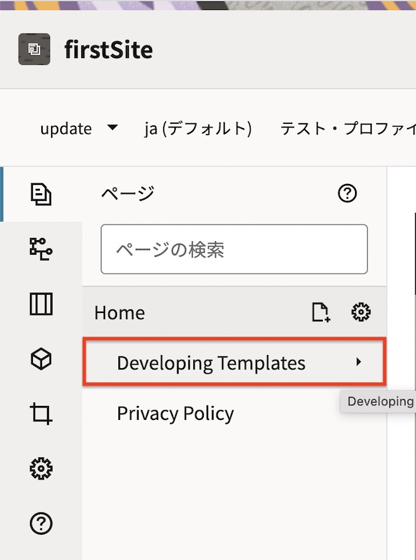
-
「ゴミ箱」 アイコンをクリックします。続けて 「OK」 をクリックします
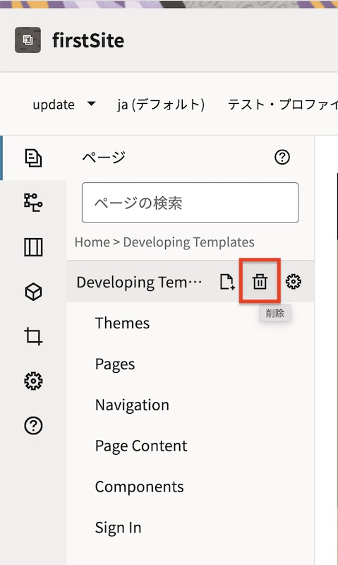
-
同じ手順で、Private Policy ページも削除します
-
最終的なページ階層は、Home のみとなります。「保存」 をクリックします
4.1.3 Homeページの編集
-
Home のページ設定を編集します。Home をクリックし、「ページ設定」 アイコンをクリックします
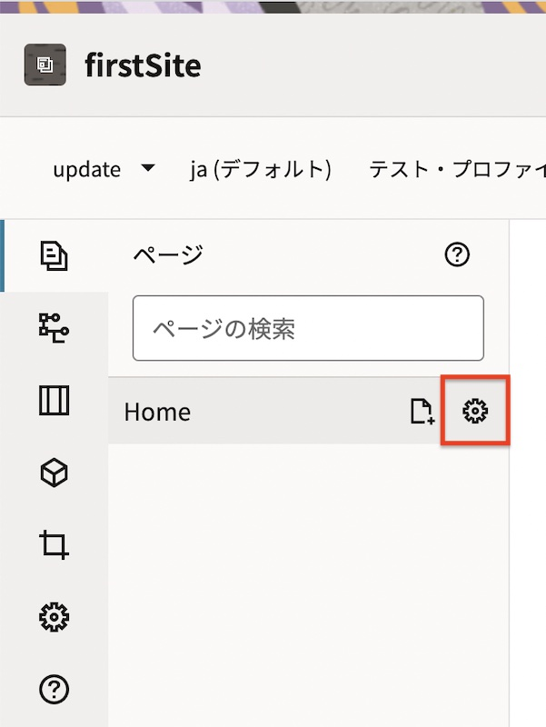
-
右パネルにページ設定が開きます。「ページURL」の 「オーバーライド」 のスイッチを ON に設定します。続けて、「ページ名」を「Home」からカタカナの 「ホーム」 に変更します。最後に 「保存」 をクリックします
-
ブラウザをリロードすると、サイト上のナビゲーションが、英語の「Home」から「ホーム」に変更されます
-
スイッチを「編集」側に切り替えます。ホームページには 「タイトル」 と 「段落」 のシードコンポーネントが配置されており、それぞれ英語のダミーテキストが入力されています
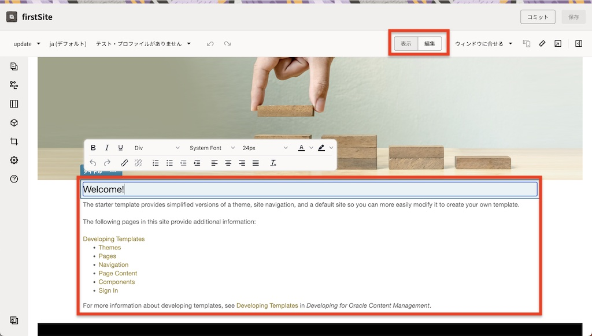
-
ホームページの 「タイトル」 と 「段落」 のテキストをそれぞれ日本語で編集します。ここでは以下の通りに編集します
- タイトル: ようこそ
-
段落: ここはファーストサイトのホームページです

-
段落コンポーネントの下にコンテンツ・アイテム（タイプ=sampleNewsType）を一覧表示します。ここではシードコンポーネントの 「コンテンツ・リスト」 を利用します
-
左メニューの 「コンポーネント」 を選択します。続けて、「シード」 を選択します

-
「コンテンツ・リスト」 コンポーネントを、先ほど編集した 「ここはサンプルサイトのホームページです」 の直下にドラッグ&ドロップで配置します
-
配置した 「コンテンツ・リスト」 コンポーネントをクリックします
-
「コンテンツ・リスト」のメニュー をクリックし、「設定」 をクリックします
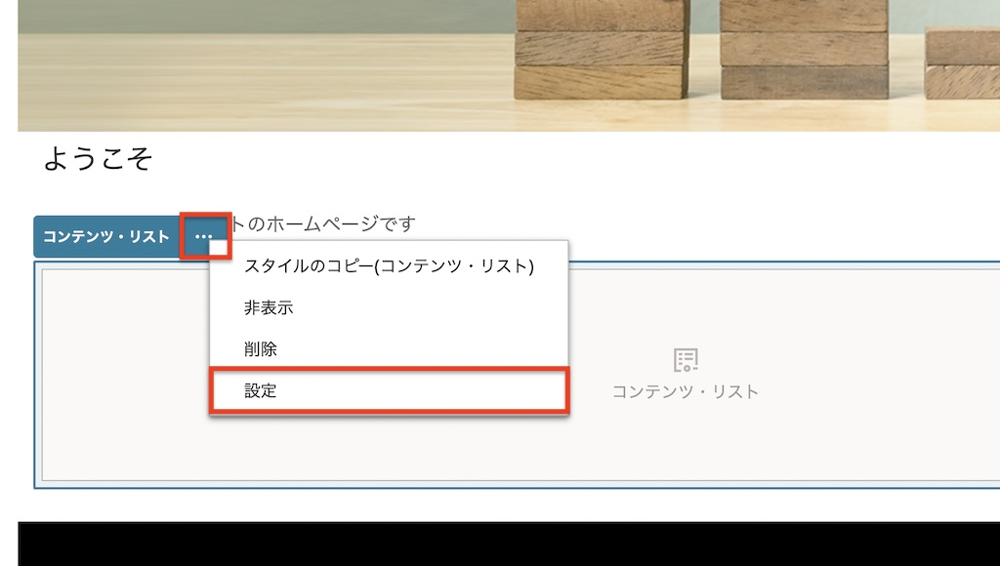
-
「一般」タブで、以下の通りに設定します
- コンテンツ・タイプ: sampleNewsType
- 最大アイテム数: 2
- 日付: すべての日付
- 並替え基準: 日付(新しいものから)
-
-
「コンテンツ・リスト」コンポーネント内には、前の手順で公開チャネル firstSite を追加した sample news content 001 が表示されます
-
「保存」 をクリックします
4.1.4 Detailページの追加および編集
コンテンツ・アイテムを詳細表示する Detail ページを作成します
-
左サイドバーの 「ページ」 をクリックします
-
「Home」 をクリックした状態で、「ページの追加」 をクリックします
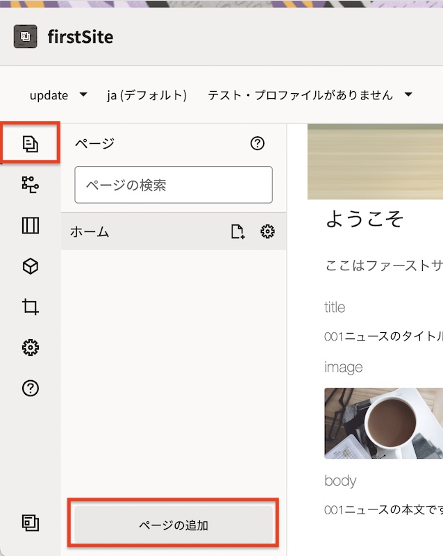
- 右パネルの「ページ設定」→「設定」タブで、以下の通りに入力します。最後に、「サイド・パネルの表示」 をクリックし、サイド・パネルを閉じます
- ページ・タイプ: Webページ
- ページ名: Detail
- ページURL: detail.html (※自動入力されます。変更しない)
- オーバーライド: 選択しない
- ページ・レイアウト: index.html を選択
- モバイル・ページ・レイアウト: 「デスクトップと同じ」 を選択
- ページ・オプション
- 詳細ページ: 選択する
-
ナビゲーションからページを非表示: 選択 (※自動的に選択されます。変更しない）
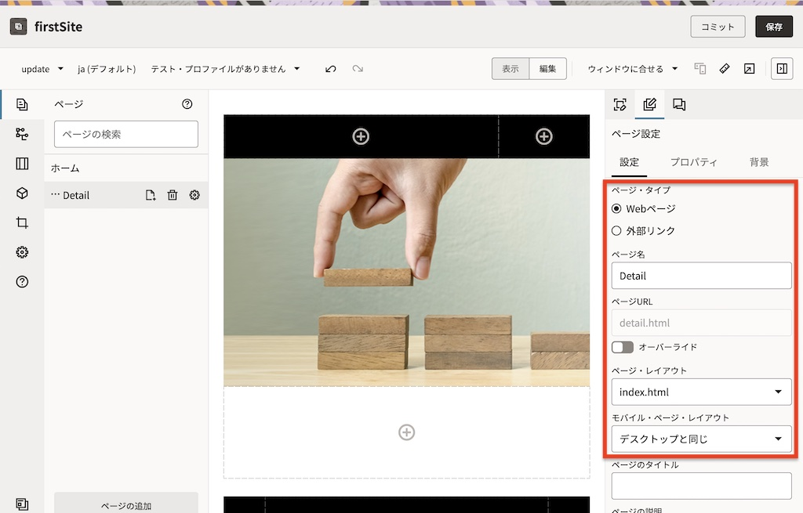
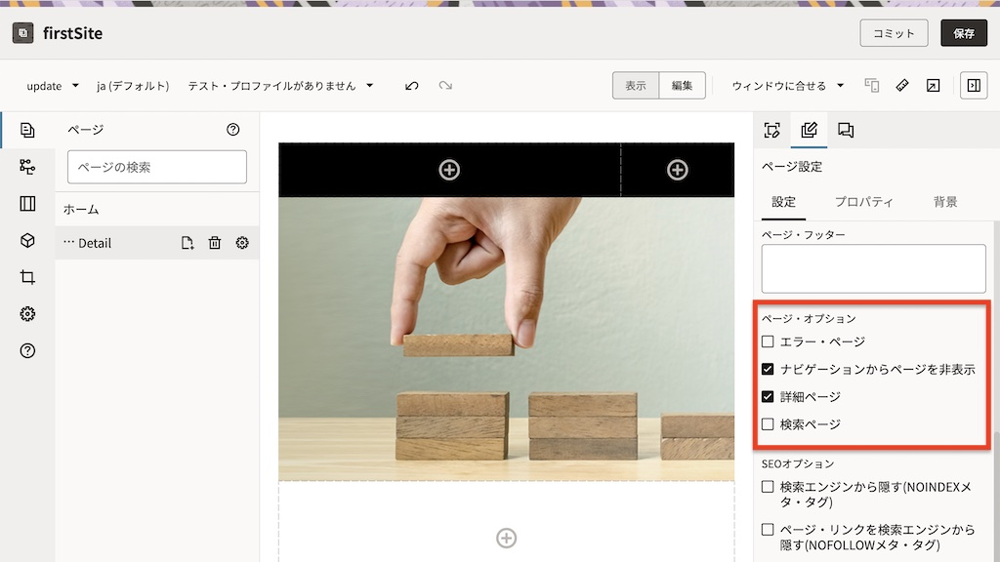
-
Detail ページが追加されます
[Memo]
ページ・オプションで「詳細ページ」を選択すると、ページ名の先頭に … アイコンが表示されます。これは、Webサイトのナビゲーション上に表示されないページを意味します -
続けて、コンテンツ・プレースホルダーをスロットに配置します。左サイドバー→ 「コンポーネント」→「シード」 をクリックします
-
「コンテンツ・プレースホルダー」 を、slot-contentスロット の中にドラッグ&ドロップで配置します
-
「コンテンツ・プレースホルダー」の メニュー→「設定」 をクリックします
- 右パネルの「ページ設定」→「設定」タブで、以下の通りに選択し、設定画面を閉じます
- コンテンツ・タイプ: sampleNewsType
- アイテムの表示: コンテンツ・プレースホルダーのデフォルト
-
ここのアイテムを表示するページ: デフォルト
- 「保存」 をクリックします
4.1.5 サイト編集のコミット
-
スイッチを編集→ 表示 に切り替え、「コミット」 をクリックします
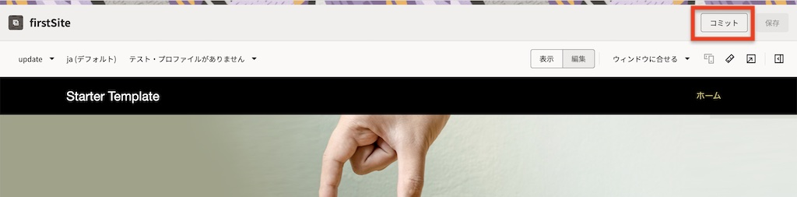
-
確認のダイアログが表示されるので 「コミット」 をクリックします
[Memo]
コミット操作により、更新内容がベース・サイトに反映され、更新（ここでは update）は削除されます -
サイト編集画面を閉じます
4.2 サイトの公開
サイトを公開します。オンライン状態のサイトを「公開」すると、ベース・サイトの内容がサイトにアクセス可能なユーザーすべてに表示されます
-
firstSite を選択し、「公開」 をクリックします
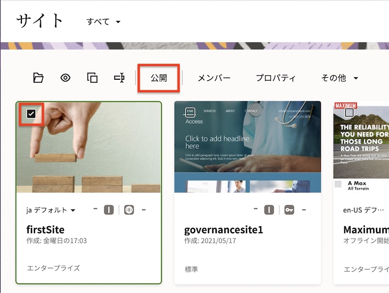
-
「サイトと、サイトの公開チャネルのターゲット対象になっているすべてのアセットの公開」 を選択します。続けて、「サイト検証画面の表示」を選択し、「完全な検証レポートの表示」を選択します。最後に、「OK」 をクリックします
-
サイトの公開検証が行われます。検証チェックに合格したことを確認し、「公開」 をクリックします
[Memo]
サイトだけではなく、firstSite 上に配置したアセット（sample news content 001 と SampleImage1.jpg）も検証され、公開準備が完了されています。これは、2つのアセットが サイトの公開チャネル（firstSiteチャネル） のターゲット対象となっているためです -
しばらくすると、サイトのステータスが 「公開」 に遷移します
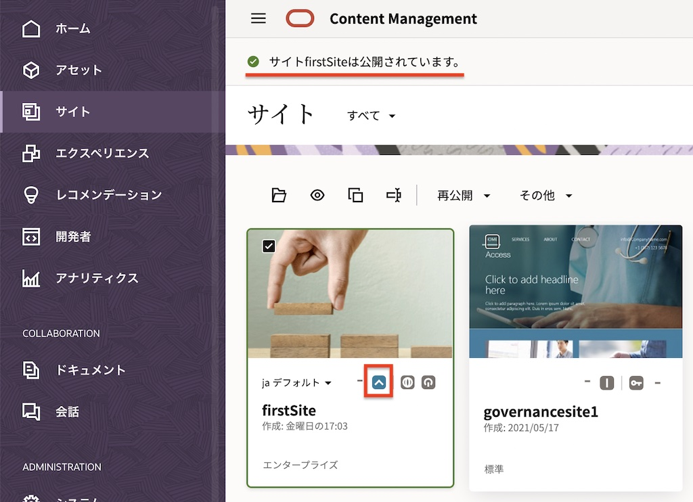
4.3 サイトのオンライン化
サイトを「オンラインにする」と、完全にレンダリングされたHTMLバージョンのサイトが作成され、Oracle Cloudのホスティング環境にコピーされます。さらに、オンライン・サイトのURLが払い出され、サイト訪問者はWebブラウザでこのURLにアクセスし、サイトを閲覧できるようになります
オンライン・サイトのURLは、サイトの「プロパティ」より確認できます。デフォルトのURLの形式は次のとおりです。
https://<OCM instance>-<Tenancy>.ocecdn.oraclecloud.com/site/<Site name>
-
前の手順で公開した
firstSiteを選択し、「オンラインにする」 をクリックします -
「確認して続行」 にチェックを入れ、「オンラインにする」 をクリックします

-
サイトがオンライン状態に遷移します
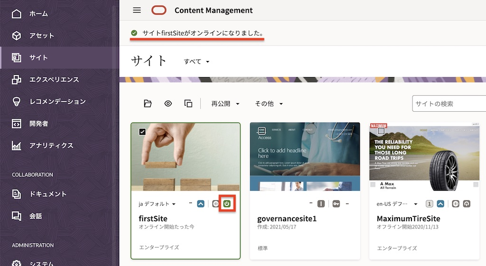
[Memo]
サイトを「オフラインに設定」すると、Oracle Cloudのホスティング環境にコピーされたすべてのファイルが削除され、サイト訪問者はサイトを閲覧できなくなります
5. 公開サイトの確認
公開されたオンライン状態のサイトを確認します
-
firstSiteを選択し、「プロパティ」 を開きます -
「サイトURL」 をコピーし、別ブラウザで開きます
-
firstSite が表示されます。「001ニュースの本文です」の下の Details をクリックします

-
sample news content 001の詳細表示ページが表示されます。
[Memo]
1.2項で作成した2つのコンテンツ・レイアウトsampleNewsType-overviewとsampleNewsType-detailは、ほぼ同じレイアウトになります。そのため、Webサイト上での表示イメージもほぼ同じになります。それぞれのレイアウトを変更することで、Webサイト上での表示イメージを変えることができます。コンテンツ・レイアウトの編集方法はOracle Content Management のコンテンツ・レイアウトを編集しようをご確認ください -
ブラウザの「戻る」をクリックし、
firstSiteの「ホーム」に戻ります
以上でこのチュートリアルは終了です。